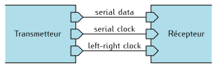
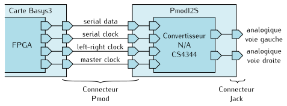
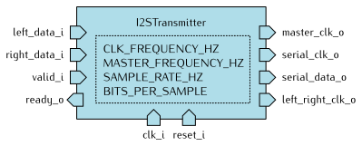
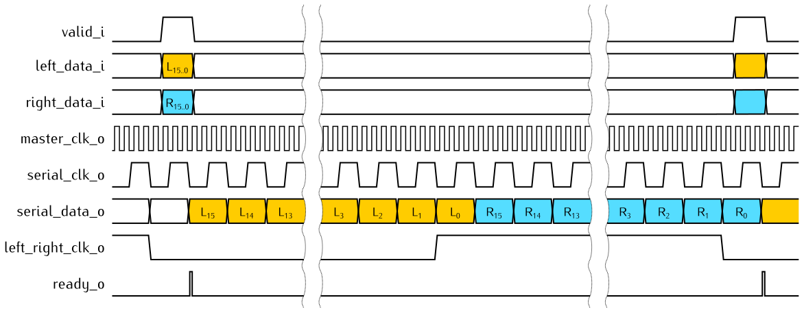
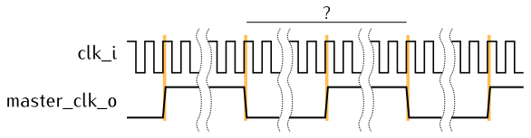
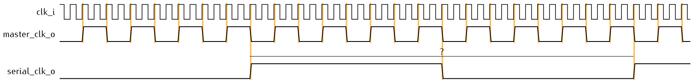
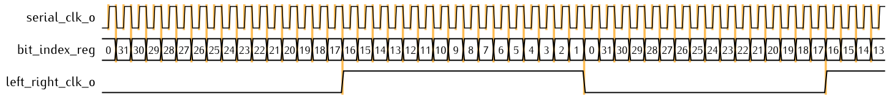
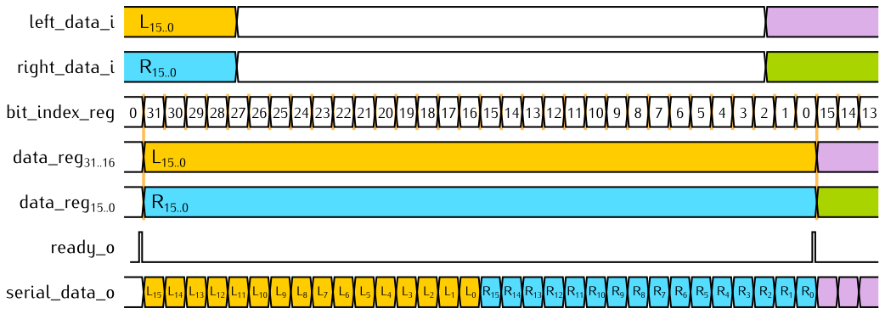
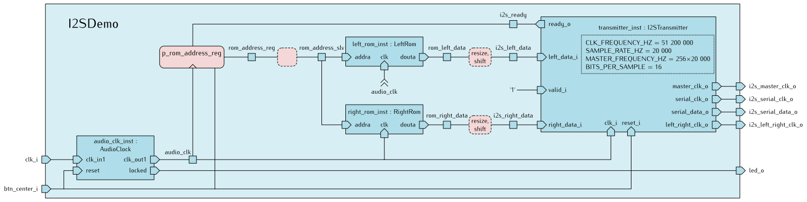

I2S (Inter-IC Sound) est un standard de bus de données permettant de connecter des équipements audio numériques.
Typiquement, un équipement transmetteur envoie les échantillons d’un signal audio, codés en binaire, vers un équipement récepteur.
Ce bus possède les caractéristiques suivantes :
- Les données sont transmises en série sur un fil (serial data).
- La transmission bit à bit est synchrone sur une horloge (serial clock).
- Un signal de sélection (appelé word select ou left-right clock) indique si les données courantes concernent la voie gauche ou droite.
Dans le cas d’un signal audio stéréo, le signal de sélection est un signal carré qui permet de transmettre en alternance
les échantillons de la voie gauche (left-right clock à '0') et de la voie droite (left-right clock à '1').

Le document suivant contient la spécification complète du bus I2S :
Le module PmodI2S
Le module PmodI2S de Digilent
est une sortie audio stéréo compatible avec les connecteurs Pmod des cartes à FPGA du même constructeur.
Il est construit autour du convertisseur numérique/analogique Cirrus Logic CS4344, dont l’interface respecte le standard I2S.
Ce convertisseur possède également une entrée horloge master clock qui sera fournie par le FPGA.
Dans ce projet, le FPGA jouera le rôle de transmetteur et le module PmodI2S jouera le rôle de récepteur.
Le FPGA devra donc contenir la logique nécessaire à la transmission de données en respectant le standard I2S.

Les documentations correspondantes sont disponibles ci-dessous :
L’entité I2STransmitter
Vous allez développer l’entité I2STransmitter qui sera chargée de transmettre des données audio stéréo vers un récepteur I2S.
Cette entité sera conçue de manière à être réutilisable dans une grande variété de projets :
elle sera indépendante de la carte à FPGA, du type de récepteur ou des caractéristiques des signaux audio.

Cette entité possédera les paramètres génériques suivants :
| Paramètre |
Type |
Rôle |
CLK_FREQUENCY_HZ |
Entier |
La fréquence du signal d’horloge global du système, en Hz |
MASTER_FREQUENCY_HZ |
Entier |
La fréquence du signal d’horloge maître à destination du récepteur, en Hz |
SAMPLE_RATE_HZ |
Entier |
La fréquence d’échantillonage du signal audio, en Hz |
BITS_PER_SAMPLE |
Entier |
Le nombre de bits par échantillon du signal audio |
Et voici la liste de ses ports :
| Port |
Direction |
Type |
Rôle |
clk_i |
Entrée |
Logique |
Le signal d’horloge global du système |
reset_i |
Entrée |
Logique |
La commande de réinitialisation du système |
valid_i |
Entrée |
Logique |
Indique qu’un nouvel échantillon est disponible |
ready_o |
Sortie |
Logique |
Indique que le transmetteur est prêt à recevoir un nouvel échantillon |
left_data_i |
Entrée |
Vecteur logique signé |
La valeur d’un échantillon audio pour la voie gauche |
right_data_i |
Entrée |
Vecteur logique signé |
La valeur d’un échantillon audio pour la voie droite |
master_clk_o |
Sortie |
Logique |
Le signal d’horloge maître à destination du récepteur |
serial_clk_o |
Sortie |
Logique |
Le signal d’horloge série à destination du récepteur |
serial_data_o |
Sortie |
Logique |
Les données série à destination du récepteur |
left_right_clk_o |
Sortie |
Logique |
Le signal d’horloge sélectionnant la voie gauche ou droite |
Pour les valeurs logiques, on utilise le type std_logic du package
ieee.std_logic_1164.
Pour les vecteurs logiques représentant des nombres signés, on utilise
le type signed du package ieee.numeric_std.
Réalisation du transmetteur I2S
Au cours de son fonctionnement, l’entité I2STransmitter reçoit des échantillons
audio codés en binaire sur ses ports left_data_i et right_data_i.
Lorsque le transmetteur commence à traiter une paire d’échantillons, il met
à '1' la sortie ready_o pour demander l’échantillon suivant.
Les valeurs de left_data_i et right_data_i sont transmises à tour de rôle sur la
sortie serial_data_o.
La transmission s’effectue bit par bit, en commençant par le bit de poids fort,
au rythme de l’horloge serial_clk_o.
La sortie left_right_clk_o indique la voie en cours de transmission ('0' pour
la voie gauche, '1' pour la voie droite).
C’est un signal carré dont la fréquence est égale à la fréquence d’échantillonnage.
Un scénario typique de fonctionnement est décrit par le chronogramme suivant :

Dans l’exemple ci-dessus, le transmetteur est paramétré de la manière suivante :
BITS_PER_SAMPLE = 16MASTER_FREQUENCY_HZ = 128×SAMPLE_RATE_HZ
Pendant une période de left_right_clk_o, on transmet 2×BITS_PER_SAMPLE bits
(32 dans l’exemple ci-dessus, 16 pour la voie gauche et 16 pour la voie droite).
Avec cette combinaison de paramètres, un bit dure 4 périodes de master_clk_o.
Cette valeur a été choisie pour que le chronogramme reste lisible.
Dans la suite de cette activité, nous travaillerons avec une valeur plus élevée.
Comme imposé par le standard I2S, le signal left_right_clk_o est toujours en avance d’un bit sur serial_data_o.
Lorsque left_right_clk_o passe à '0' (voie gauche), il reste encore un bit de la voie droite à envoyer.
Lorsque left_right_clk_o passe à '1' (voie droite), il reste encore un bit de la voie gauche à envoyer.
Horloge master_clk_o
En fonction de la fréquence de l’horloge clk_i (CLK_FREQUENCY_HZ) et
de la fréquence souhaitée pour l’horloge master_clk_o (MASTER_FREQUENCY_HZ),
proposez une expression permettant de calculer
le nombre de périodes de clk_i dans une période de master_clk_o.

En respectant les règles de conception de circuits synchrones,
complétez le fichier I2STransmitter.vhd de manière à produire un signal
master_clk_o carré à la fréquence souhaitée.
Si vous ne voyez pas comment faire, relisez le cours sur les
diviseurs de fréquence.
Vérifiez que tous les signaux synchrones sur l’horloge reçoivent une valeur
initiale.
Dans ce projet, nous utiliserons une
réinitialisation asynchrone
activée par le signal reset_i.
Simulation
Le fichier I2STransmitterTestbench.vhd contient un banc de test pour
l’entité I2STransmitter.
Le banc de test est composé d’une entité principale I2STransmitterTestbench et
d’une architecture qui instancie l’entité I2STransmitter.
Le rôle de cette architecture est de simuler l’environnement de l’entité
I2STransmitter :
- Elle génère des signaux de référence sur les entrées
clk_i, reset_i, left_data_i
et right_data_i.
- Elle vérifie les valeurs et le timing des sorties
master_clk_o, left_right_clk_o,
serial_clk_o, serial_data_o, et ready_o.
- Elle affiche des messages dans la console de Vivado lorsque les signaux n’ont
pas la forme ou les valeurs attendues.
Un banc de test ne décrit pas un circuit, mais l’environnement du circuit à
tester.
Pour cette raison, il peut utiliser des instructions non synthétisables
qui facilitent la description de scénarios de fonctionnement et l’exploitation
des résultats.
Pour plus d’explication, vous pouvez vous référer au chapitre VHDL pour la simulation.
Le fichier I2STransmitterTestbench_pkg.vhd contient des déclarations de
constantes correspondant aux paramètres de fonctionnement de votre entité
I2STransmitter dans l’environnement de simulation.
Pour exécuter la simulation, nous fournissons un script qui automatise le
démarrage du simulateur et l’exécution d’une séquence de commandes :
- Dans le menu Tools, choisissez Run Tcl Script.
- Allez dans le dossier
src/I2S et sélectionnez le fichier I2STransmitterTestbench.tcl.
Au cours de la simulation, le banc de test affiche des messages dans l’onglet
Tcl Console lorsque le comportement de votre entité n’est pas conforme aux
attentes.
À cette étape, vous pouvez obtenir les messages suivants :
| Message |
Signification |
Incorrect period for master_clk |
La période de master_clk_o n’est pas celle attendue |
Incorrect duty cycle for master_clk |
Le rapport cyclique de master_clk_o est trop éloigné de 50% |
Horloge serial_clk_o
En fonction de MASTER_FREQUENCY_HZ, SAMPLE_RATE_HZ et BITS_PER_SAMPLE, proposez une expression permettant de calculer
le nombre de périodes de master_clk_o pour une période de serial_clk_o.
Dans l’exemple ci-dessous, une période de serial_clk_o dure 8 périodes de master_clk_o.

En respectant les règles de conception de circuits synchrones,
complétez l’architecture RTL de manière à produire un signal serial_clk_o
carré à la fréquence souhaitée.
Dans le fichier I2STransmitterTestbench.vhd, en vous inspirant du processus
p_check_master_clk, ajoutez un processus de vérification de serial_clk_o.
Relancez la simulation et validez le fonctionnement du circuit.
Vérifiez les messages affichés par le banc de test dans l’onglet Tcl Console.
À cette étape, vous pouvez obtenir les messages suivants :
| Message |
Signification |
Incorrect period for serial_clk |
La période de serial_clk_o n’est pas celle attendue |
Incorrect duty cycle for serial_clk |
Le rapport cyclique de serial_clk_o est trop éloigné de 50% |
serial_clk events are not aligned with falling edges of master_clk |
Les changements de serial_clk_o ne se produisent pas en même temps que les fronts descendants de master_clk_o |
Corrigez votre description et relancez le script de simulation jusqu’à ce qu’il
n’y ait plus d’erreur.
Horloge left_right_clk_o
La transmission d’une paire d’échantillons nécessite 2×BITS_PER_SAMPLE
périodes de serial_clk_o.
Pour tenir à jour l’état d’avancement de la transmission, nous allons réaliser
un décompteur bit_index_reg indiquant l’indice du bit courant à transmettre.
Complétez l’architecture RTL de manière à réaliser le décompteur bit_index_reg
et à produire un signal left_right_clk_o conforme au chronogramme ci-dessous.
Au démarrage (c’est-à-dire lors de l’activation de l’entrée reset_i),
on initialisera left_right_clk_o à '0' et bit_index_reg à 0.

Ce chronogramme représente un exemple de scénario de fonctionnement pour des
échantillons de 16 bits.
bit_index_reg est alors un décompteur modulo 32.
Dans votre architecture, rappelez-vous que le nombre de bits par échantillon
n’est pas connu a priori : il est défini par le paramètre BITS_PER_SAMPLE.
Nous n’avons pas représenté clk_i.
Cependant, toutes les transitions marquées en orange doivent s’effectuer sur des
fronts montants de clk_i.
Dans le fichier I2STransmitterTestbench.vhd, en vous inspirant du processus
p_check_master_clk, ajoutez un processus de vérification de left_right_clk_o.
Relancez la simulation et validez le fonctionnement du circuit.
Vérifiez les messages affichés par le banc de test dans l’onglet Tcl Console.
À cette étape, vous pouvez obtenir les messages suivants :
| Message |
Signification |
Incorrect period for left_right_clk |
La période de left_right_clk_o n’est pas celle attendue |
Incorrect duty cycle for left_right_clk |
Le rapport cyclique de left_right_clk_o est trop éloigné de 50% |
left_right_clk events are not aligned with falling edges of serial_clk |
Les changements de left_right_clk_o ne se produisent pas en même temps que les fronts descendants de serial_clk_o |
Sortie serial_data_o
Complétez l’architecture RTL de manière à mémoriser les valeurs de left_data_i
et right_data_i dans un registre data_reg de largeur 2×BITS_PER_SAMPLE bits.
La mémorisation s’effectuera à la fin de la transmission du bit d’indice 0,
si valid_i vaut '1'.
La sortie serial_data_o reçoit le bit d’indice bit_index_reg du registre data_reg.
Elle ne doit pas être synchronisée sur clk_i.

Dans le fichier I2STransmitterTestbench.vhd, ajoutez un processus chargé de vérifier la valeur de serial_data_o
à chaque front montant de serial_clk_o.
Relancez la simulation et validez le fonctionnement du circuit.
Vérifiez les messages affichés par le banc de test dans l’onglet Tcl Console.
À cette étape, vous pouvez obtenir le message suivant lorsque la valeur
de serial_data_o n’est pas correcte :
| Message |
Signification |
Incorrect value for serial_data |
La valeur de serial_data_o n’est pas celle attendue |
serial_data events are not aligned with falling edges of serial_clk |
Les changements de serial_data_o ne se produisent pas en même temps que les fronts descendants de serial_clk_o |
Sortie ready_o
Affectez la sortie ready_o de manière à produire une impulsion à chaque fois
que le transmetteur accepte un nouvel échantillon.
Chaque impulsion doit coïncider avec la dernière période d’horloge du bit
d’indice 0.
Elle ne doit pas être synchronisée sur clk_i.
Dans le fichier I2STransmitterTestbench.vhd, en vous inspirant du processus
p_check_master_clk, ajoutez un processus de vérification de ready_o.
Ici, on regardera la valeur de i2s_ready sur les fronts montants de clk :
wait until rising_edge(clk) and i2s_ready = '1';
t_rise := now;
...
wait until rising_edge(clk) and i2s_ready = '0';
t_fall := now;
On vérifiera que t_high est égal à la période de clk, et que
ready_o a la même périodicité que left_right_clk_o.
Relancez la simulation et validez le fonctionnement du circuit.
Vérifiez les messages affichés par le banc de test dans l’onglet Tcl Console.
À cette étape, vous pouvez obtenir les messages suivants :
| Message |
Signification |
Incorrect pulse duration for ready |
ready_o est à '1' pendant une durée différente d’une période d’horloge |
Incorrect period for ready |
La période de ready_o n’est pas celle attendue |
Application de démonstration
Pour valider le fonctionnement de votre transmetteur I2S sur le matériel,
nous vous proposons une application de démonstration qui joue un extrait audio
de quelques secondes.
Les échantillons audio destinés aux voies gauche et droite seront rangés dans
des mémoires en lecture seule.
L’entité I2SDemo possède les ports suivants :
| Port |
Direction |
Type |
Rôle |
clk_i |
Entrée |
Logique |
Le signal d’horloge global du système, à 100 MHz |
btn_center_i |
Entrée |
Logique |
Le bouton de réinitialisation du système |
led_o |
Entrée |
Logique |
Une LED indiquant le verrouillage de l’horloge secondaire |
i2s_master_clk_o |
Sortie |
Logique |
Le signal d’horloge maître à destination du récepteur I2S |
i2s_serial_clk_o |
Sortie |
Logique |
Le signal d’horloge série à destination du récepteur I2S |
i2s_serial_data_o |
Sortie |
Logique |
Les données série à destination du récepteur I2S |
i2s_left_right_clk_o |
Sortie |
Logique |
Le signal d’horloge sélectionnant la voie gauche ou droite |
Le circuit est construit autour d’une instance de l’entité I2STransmitter paramétrée de la manière suivante :
- Fréquence d’échantillonnage : 20000 Hz.
- Fréquence de l’horloge
master_clk_o : 256 fois la fréquence d’échantillonnage, soit 5,12 MHz.
- Taille des échantillons : 16 bits
Le rapport 256 n’a pas été choisi au hasard. En effet, le composant I2S CS4344
supporte un nombre limité de rapports de fréquence entre master clock et
left-right clock.
Malheureusement pour nous, en partant de l’horloge clk_i à 100 MHz de la carte
Basys3, il n’est pas possible de descendre à 5,12 MHz avec un simple circuit
diviseur de fréquence.
Nous allons donc utiliser un bloc générateur d’horloge intégré au FPGA
pour produire un signal d’horloge secondaire audio_clk qui cadencera
tout le reste du circuit.
Ce bloc est représenté sous le nom AudioClock sur le schéma ci-dessous.
Il réalise un boucle à verrouillage de phase, ou PLL pour Phase-Locked Loop,
capable de synthétiser des horloges par multiplication et division de fréquence.
Si nous résumons les fréquences d’horloge intervenant dans le système I2SDemo
nous avons :
| Horloge |
Fréquence |
clk_i |
100 MHz |
| ↓ |
×64/125 |
audio_clk |
51,2 MHz |
| ↓ |
/10 |
master_clk_o |
5,12 MHz |
| ↓ |
/8 |
serial_clk_o |
640 kHz |
| ↓ |
/32 |
left_right_clk_o |
20 kHz |

Les échantillons audio left_data_i et right_data_i sont lus dans deux mémoires représentées par les
entités LeftRom et RightRom.
Ces mémoires sont réalisées à l’aide de blocs de RAM du FPGA configurés de la manière suivante :
- Taille d’une cellule : 8 bits.
- Nombre de cellules : 80000.
- Accès en lecture seule.
- Contenu initial chargé avec des extraits audio de 4 secondes.
Au cours de son fonctionnement, le circuit parcourt les données enregistrées dans ces deux mémoires.
Le processus p_rom_address_reg réalise un compteur qui tient à jour l’adresse des
échantillons à lire en mémoire pour chaque voie.
Lorsque le transmetteur I2S demande un nouvel échantillon (en activant ready_o), l’adresse
s’incrémente et les mémoires fournissent de nouvelles valeurs.
Sur le schéma ci-dessus, les rectangles en pointillés représentent des instructions d’affectation concurrentes.
Elles jouent deux rôles : convertir les types de données (std_logic_vector vers signed et réciproquement)
et appliquer un facteur d’amplification (×64) aux échantillons audio.
Dans le panneau Flow Navigator de Vivado, ouvrez IP Catalog.
Dans l’onglet IP Catalog, cherchez le composant dont le nom est Clocking Wizard et
double-cliquez dessus.
Renseignez les champs suivants :
| Onglet |
Champ |
Valeur |
|
Component Name |
AudioClock |
| Clocking Options |
Input Clock Information, Primary, Input Frequency (MHz) |
100 |
| Output Clocks |
clk_out1, Output Freq (MHz), Requested |
51.2 |
Pressez OK, puis, dans la boîte de dialogue Generate Output Products, pressez le bouton Generate.
Vivado va synthétiser un bloc de mémoire. Cette opération peut prendre quelques minutes.
Dans l’onglet IP Catalog, cherchez le composant dont le nom est Block Memory Generator et
double-cliquez dessus.
Renseignez les champs suivants :
| Onglet |
Champ |
Valeur |
|
Component Name |
LeftRom |
| Basic |
Interface Type |
Native |
|
Memory Type |
Single Port ROM |
| Port A Options |
Port A Width |
8 |
|
Port A Depth |
80000 |
|
Enable Port Type |
Always Enabled |
| Other Options |
Load Init File |
Cocher la case |
|
Coe File |
data/weekend.coe |
Pressez OK, puis, dans la boîte de dialogue Generate Output Products, pressez le bouton Generate.
Vivado va synthétiser un bloc de mémoire. Cette opération peut prendre quelques minutes.
Double-cliquez à nouveau sur Block Memory Generator et créez un deuxième bloc de mémoire
avec les paramètres suivants :
| Onglet |
Champ |
Valeur |
|
Component Name |
RightRom |
| Basic |
Interface Type |
Native |
|
Memory Type |
Single Port ROM |
| Port A Options |
Port A Width |
8 |
|
Port A Depth |
80000 |
|
Enable Port Type |
Always Enabled |
| Other Options |
Load Init File |
Cocher la case |
|
Coe File |
data/boccherini.coe |
Pressez OK, puis, dans la boîte de dialogue Generate Output Products, pressez le bouton Generate.
Vivado va synthétiser un bloc de mémoire. Cette opération peut prendre quelques minutes.
Synthétiser et implémenter le circuit
Indiquez que l’entité I2SDemo est l’entité principale du circuit :
set_property top I2SDemo [get_filesets sources_1]
Exécutez cette commande dans la console Tcl pour réduire la gravité de
certains messages concernant les affectations de broches :
set_msg_config -id {Common 17-55} -new_severity {WARNING}
Générez le fichier binaire à charger dans le FPGA :
Flow Navigator → Program and Debug → Generate Bitstream.

Vivado va enchaîner toutes les étapes d’analyse des fichiers sources, de synthèse logique, de placement et routage,
pour terminer par la génération d’un fichier binaire à charger dans le FPGA.
À la fin des opérations, la boîte de dialogue Bitstream Generation Completed s’affiche.
Choisissez Open Hardware Manager.
Vérifiez que l’interrupteur d’alimentation de votre carte Basys3 est en position OFF.
Le cavalier situé à côté de l’interrupteur doit être en position USB.
Branchez le module PmodI2S sur le connecteur JA (en haut sur le côté gauche de la carte)
et branchez un casque stéréo ou des enceintes sur le connecteur jack.
Vous ne connaissez pas à l’avance le volume de la sortie audio.
Ne mettez pas vos écouteurs sur les oreilles avant d’être sûr
que le son n’est pas trop fort.
Reliez le connecteur micro-USB de la carte à un port USB de votre PC.
Mettez la carte sous tension.
En haut du panneau Hardware Manager, pressez Open target et choisissez Auto Connect.

Pressez ensuite Program Device.

Implémentation de référence
Pour vous éviter de rester bloqués à cette étape, nous fournissons deux fichiers
de référence :
src/I2S/I2STransmitter-ref.vhd est un fichier source VHDL du transmetteur I2S,
dont le contenu a été volontairement rendu illisible, et dont les valeurs de paramètres
génériques ont été figées.
Nous vous conseillons de ne pas perdre de temps à essayer de le rendre lisible.ref/I2SDemo-ref.bit est le fichier binaire de l’application de démonstration à
charger directement dans le FPGA à partir du Hardware Manager de Vivado.
Effectuez l’action Program Device et choisissez le fichier I2SDemo-ref.bit.
{kind=link}
{kind=link}
{kind=link}
{kind=link}
{kind=link}
{kind=link}
{kind=link}
{kind=link}
{kind=link}